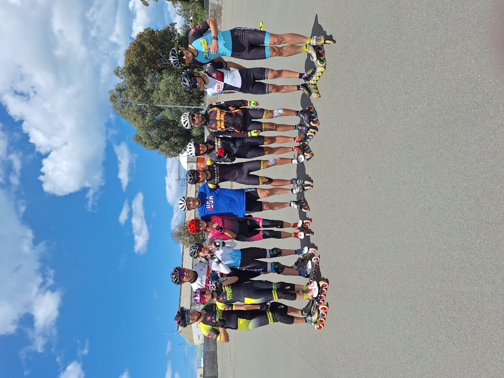
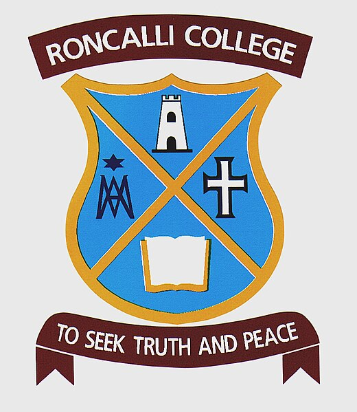

Our public sessions are held year round and are fun for the whole family, plus parents get to skate for free. Just don't forget to bring along a pair of socks and a helmet. Opening Hours: Sunday from 2-4pm Tuesday and Thursday during School holidays from 2-4pm Casual Prices: $5 entry $5 Skate hire Club Membership: Join the South Canterbury Roller Sports Club and skate for free at all the public sessions. Contact us to learn more about our individual and family membership options. Private hire: Private party hire starts from $15/person which includes skate hire and access to our party room. You can also take advantage of our kitchen and sound system, plus we have a BBQ available for hire on request. Whether you are skating or enjoying our range of non-skating games, a birthday party at the South Cantberbury Roller Sports Club is great value and lots of fun for everyone. Want to give Speed Skating a go? The South Canterbury Roller Sports Club is home to one of New Zealand's largest speed skating teams. If you are interested in giving speed skating ago, we encourage you to first join our learn to skate sessions. Once you can complete the learn to skate steps contact us to learn more about joining the speed skating programme.
 This is Tony Muse a 19 time world champ with the Hong Kong skaters for the 2025 Tour of Timaru .
 This is a link to the roncalli website.